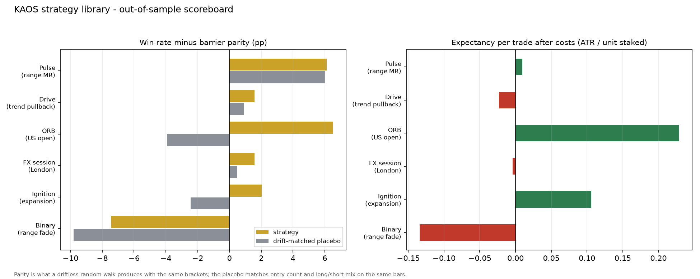
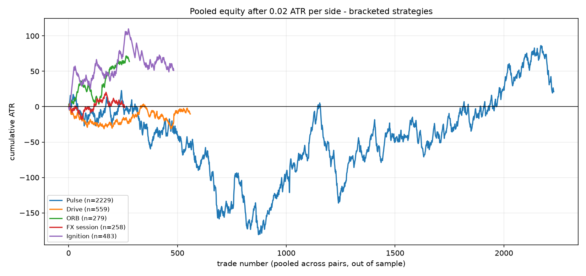

Seven rules covering crypto, FX, US equities, binary options and options - each one scored out of sample against two controls and translated into the native order format of Kraken, Coinbase, Binance, MetaTrader 5, OANDA, tastytrade, Alpaca and Pocket Option.
| Strategy | Class | Trades (OOS) | Win rate | Parity | Excess | Exp / trade | Profit factor | Lift vs placebo | Verdict |
|---|---|---|---|---|---|---|---|---|---|
| KAOS Pulse - range mean reversion | crypto, fx, equity, binary | 2229 | 68.6% | 62.5% | +6.1pp | +0.010 | 1.01 | +0.1pp | promising, not significant |
| KAOS Drive - trend pullback | crypto, fx, equity | 554 | 40.0% | 38.5% | +1.6pp | -0.023 | 0.97 | +0.6pp | no edge after costs |
| KAOS ORB - US opening range breakout | equity | 279 | 39.8% | 33.3% | +6.5pp | +0.229 | 1.38 | +10.4pp | promising, not significant |
| KAOS FX Session - London open range breakout | fx | 258 | 34.9% | 33.3% | +1.6pp | -0.004 | 0.99 | +1.1pp | no edge after costs |
| KAOS Ignition - volatility expansion breakout | crypto | 483 | 35.4% | 33.3% | +2.0pp | +0.106 | 1.11 | +4.5pp | promising, not significant |
| KAOS Binary - range fade, fixed expiry | binary | 2387 | 48.1% | 55.6% | -7.5pp | -0.134/unit | 0.74 | +2.3pp | no edge after costs |
| KAOS Options - defined-risk premium selling | options | - | - | - | - | - | - | - | unvalidated |
Parity is the driftless hit rate implied by the bracket geometry; the placebo takes the same number of longs and shorts at random bars inside the same window and runs them through the identical exit engine. Costs are 0.02 ATR per side.
Inside a non-trending regime (efficiency ratio <= 0.28) a price stretched at least 1 ATR from EMA20, with RSI stretched and outside the Bollinger band, tends to revert. A 3 ATR target against a 5 ATR stop converts that tendency into a high hit rate.
When the efficiency ratio is above 0.30, EMA20 sits on the correct side of EMA50 and a bar dips into EMA20 before closing back with the trend, the trend is more likely to continue.
The first 30-45 minutes of the US cash session set a reference range. A close outside that range, in the direction of the closing candle, is taken once per session because the first decisive break carries the day's order flow.
The London open concentrates the day's order flow into a narrow range. The first decisive close outside that opening range tends to extend through the session.
Crypto pays for volatility expansion, not for value. A close through the 20-bar extreme on a bar with above-average range and a dominant body marks the start of a directional push.
Binary options have no stop, so only the close at expiry matters. In a range regime a stretched price has a better-than-even chance of closing back toward the mean within 3 bars.
Sell defined-risk premium only when the underlying is range-bound and realised volatility sits below its own median; buy debit spreads when a trend regime and rising volatility coincide. The signal chooses the structure, not just the direction.
| Strategy | Asset class | Trades | Win rate | Exp / trade | Pairs positive |
|---|---|---|---|---|---|
| KAOS Binary | crypto | 1515 | 52.0% | -0.058 | 0/4 |
| KAOS Binary | equity | 178 | 46.6% | -0.151 | 0/2 |
| KAOS Binary | fx | 694 | 39.9% | -0.318 | 0/2 |
| KAOS Ignition | crypto | 483 | 35.4% | +0.127 | 9/16 |
| KAOS Drive | crypto | 147 | 39.7% | +0.048 | 4/10 |
| KAOS Drive | equity | 126 | 34.3% | -0.443 | 4/16 |
| KAOS Drive | fx | 281 | 42.7% | +0.029 | 7/12 |
| KAOS FX Session | fx | 258 | 34.9% | +0.001 | 4/8 |
| KAOS ORB | equity | 279 | 39.8% | +0.224 | 9/12 |
| KAOS Pulse | crypto | 1015 | 65.4% | -0.073 | 10/20 |
| KAOS Pulse | equity | 359 | 64.6% | +0.041 | 12/25 |
| KAOS Pulse | fx | 855 | 72.7% | +0.175 | 9/17 |
Expectancy per trade; PF = profit factor. Cost is charged on entry and exit.
| Strategy | cost 0.000 ATR/side | cost 0.020 ATR/side | cost 0.050 ATR/side | cost 0.100 ATR/side |
|---|---|---|---|---|
| KAOS Pulse - range mean reversion | +0.050 (PF 1.04) | +0.010 (PF 1.01) | -0.050 (PF 0.96) | -0.150 (PF 0.89) |
| KAOS Drive - trend pullback | +0.022 (PF 1.03) | -0.018 (PF 0.97) | -0.078 (PF 0.89) | -0.178 (PF 0.77) |
| KAOS ORB - US opening range breakout | +0.269 (PF 1.46) | +0.229 (PF 1.38) | +0.169 (PF 1.26) | +0.069 (PF 1.10) |
| KAOS FX Session - London open range breakout | +0.036 (PF 1.05) | -0.004 (PF 0.99) | -0.064 (PF 0.91) | -0.164 (PF 0.80) |
| KAOS Ignition - volatility expansion breakout | +0.146 (PF 1.16) | +0.106 (PF 1.11) | +0.046 (PF 1.05) | -0.054 (PF 0.95) |
Binary bets pay payout on a win and lose the stake on a loss, so break-even win rate is
1/(1+payout). A rule below that line loses money however it is staked.
| Strategy | payout 60% | payout 80% | payout 92% |
|---|---|---|---|
| KAOS Binary - range fade, fixed expiry | -0.230 (WR 48.1% vs 62.5%) | -0.134 (WR 48.1% vs 55.6%) | -0.077 (WR 48.1% vs 52.1%) |
Only the opening-range rule survives a 10x cost assumption. That is the difference between a real horizon and harvesting noise inside the spread.


| Platform | KAOS Pulse | KAOS Drive | KAOS ORB | KAOS FX Session | KAOS Ignition | KAOS Binary | KAOS Options |
|---|---|---|---|---|---|---|---|
| Pocket Option binary direction + fixed expiry | ✓ | · | · | · | ✓ | ✓ | · |
| Kraken limit entry + stop-loss + take-profit | ✓ | ✓ | · | ✓ | ✓ | · | · |
| Coinbase Advanced limit entry + stop-limit | ✓ | ✓ | · | · | ✓ | · | · |
| Binance OCO (limit + stop-limit) | ✓ | ✓ | · | · | ✓ | · | · |
| MetaTrader 5 pending limit with SL/TP | ✓ | ✓ | ✓ | ✓ | · | · | · |
| OANDA v20 market/limit with stopLossOnFill + takeProfitOnFill | ✓ | ✓ | · | ✓ | · | · | · |
| tastytrade equity bracket or multi-leg option | ✓ | ✓ | ✓ | · | · | · | ✓ |
| Alpaca bracket order (order_class=bracket) | ✓ | ✓ | ✓ | · | · | · | · |
Order shapes are generated by platforms.py from one neutral intent -
side, entry, stop, target, ATR. No API keys are embedded and no order is placed.
Entries are decided on the close and filled at the next open, the stop wins any intrabar tie, gaps fill at the open, one position per pair at a time, cost charged on both sides. Data is 83 days of 5m/15m candles, 11 days of 1m and ~2.8 years of 1h/4h across 4 crypto pairs, 4 FX pairs and 6 US equities. Only the last 40% of each series is scored. Options are not measured because the data set contains no option chain - the structure rule is complete, the P&L is not claimed.